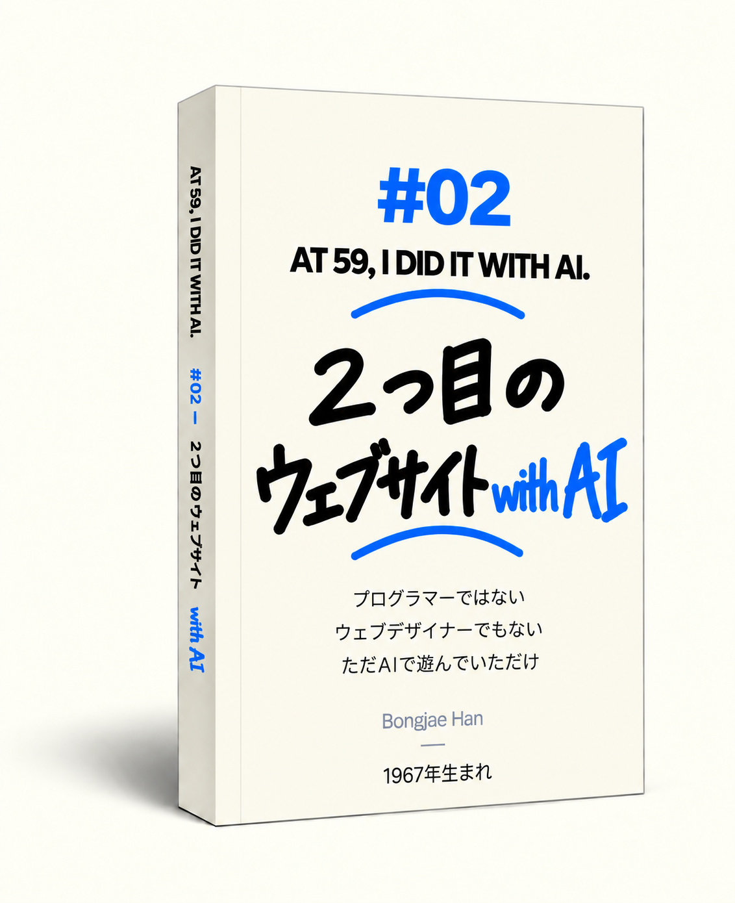

AT 59,
I DID IT
WITH AI.
私について
僕は1967年生まれです。人生の後半を迎える頃、AIと出会いました。
プログラマーではない僕が、AIと一緒に、人が心地よく眠れるようにするウェブサイトを2つ作りました。
その過程で起きたことを、文章とイラストで記録し、本にしました。
そして、その記録を、誰でも無料で読めるように、このウェブサイトに載せています。
これは、専門的なAIの教科書でも、AIのマニュアルでもありません。
AIは、わずか1、2か月でも変化を実感できるほどの速さで進化しています。
半年後、1年後にはどのような姿になっているのか、予想することはできません。
AIが急速に変わっていった時代。
人生経験を重ねてきた一人の人間が、急速に成長するAIと出会い、一緒に仕事をした記録です。
学び、失敗し、また直していった過程を記しました。
この記録が、AIを理解するための小さなヒントになればと思います。
AIをどう学べばいいのか迷っている人にとって、一つの道しるべになればうれしいです。
僕は1967年生まれです。
プログラマーでも、ウェブ開発者でもありません。
本を書いたことも、翻訳をしたこともありませんでした。
人生の後半を迎える頃、AIと出会いました。
AIは日ごとに正確になり、賢くなっていきました。
人にたとえるなら、思春期を過ごしているように感じました。
ときどき予想もしない行動をし、
うまくできていたことでも、突然とんちんかんな答えを返すことがありました。
ときには、自分のミスではないかのように平然と話すこともありました。
以前から、この世界の誰かの役に立つことをしてみたいと思っていました。
漠然としたことではなく、直接役に立つこと。
そんなことができれば、ぼんやりしていた人生の価値が少しははっきりするような気がしました。
「検索エンジンが、必要としている人とつないでくれる」というAIの言葉を聞き、
人が心地よく眠れるようにするウェブサイトを作ることにしました。
比較的短い期間で、2つのウェブサイトを完成させました。
初めて作るウェブサイトでしたが、適当には作りたくありませんでした。
ウェブサイトを作る過程で、AIと一緒に仕事をしながら起きたことを記録しました。
その記録を3冊の本にまとめ、6つの言語で出版しました。
そして、誰でも無料で読めるように、このウェブサイトに載せました。
この文章を読んでいる今この瞬間にも、AIは進化しているはずです。
僕を含め、人間の側もAIと一緒に働き、考える方法をこれからも進化させていくでしょう。
僕はこれから、また別のことも始めるような気がします。
AIが、僕の思いもしなかった可能性を次々と見せてくれるからです。
この記録は、「AIはこう使え」というマニュアルではありません。
「AIはこう学べ」という教科書でもありません。
AIが人類に大きな助けをもたらすという期待もあれば、
脅威になるかもしれないという不安もあります。
AIは、わずか1、2か月でも違いを実感できるほどの速さで変化しています。
その変化のスピードは、これからさらに速くなっていくでしょう。半年後、1年後にAIがどのような姿になっているのか、予測するのは難しいことです。
どんな未来が来るのか、僕のような普通の人間にはわかりません。
ただ、人とAIが互いをもう少し理解し、共に生きていくために、
この記録が小さなヒントになれば、それで十分です。
AIが急速に変わっていった時代。
人生経験を重ねてきた一人の人間が、急速に成長するAIと出会い、
一緒に働き、学び、失敗し、また直していった記録です。
二度と戻らない時代のスナップショットです。
体験 #01
01
「何も知らない」「できる？ じゃあ、やってみよう」
以前から、この世界の誰かに直接役立つことをしてみたいと思っていました。人が心地よく眠れるようにするウェブサイトを作ることにしました。
プログラミングも知らず、ウェブが何なのかさえほとんど知らない状態で、AIだけを頼りに始めました。
AIと一緒に、試行錯誤の連続でした。初めてのウェブサイトを作る過程で起きた、生々しい経験を記録しました。
本の中 #01
- 01あれ？ これ、面白そうだ。AIが「Google検索は、世界中に散らばる小さな需要をつないでくれる」と言った。その言葉が心に引っかかった。誰かが必要としているものを作って、インターネットに置いておく。そんなことを想像し始めた。
- 02何も知らない。それでも大丈夫？デザインもコーディングもサーバーも知らない僕が、一人でウェブサイトを作れるのか聞いてみた。AIは「できます」と答えた。
- 05ちょっと待って。これをウェブサイトにしたらどうだろう？YouTubeで試していた映像や音の作業を、ウェブサイトにできないかと考えた。眠るときにつけておける、ブラックスクリーンのノイズサイトを作ることにした。
- 07不思議なことに、そこから作業が速く進み始めた。知らない技術用語を一つずつ勉強していたら、きりがなかった。「今、何を知ればいい？」と聞くようになると、作業が速く進み始めた。
- 09あえて、ざっくり理解する。何もかも詳しく理解しようとしたら終わらない。今の判断に必要なところまで理解したら、また作業を先に進めた。


- 10これ、君にできる？最初の画面を直しているとき、AIにスクリーンショットを見せた。自分がずっと悩んでいたデザインも、AIにできるのだと気づいた。
- 11できる？ じゃあ、やってみよう。カードにマウスを乗せると音が鳴り、波形が動く。そんな機能を思いついた。AIにできるか聞き、一つずつ画面に実装していった。
- 12ときどき、空を見上げたほうがいい。ウェブサイトのカードを延々と直していて、ふと散歩に出た。空を見上げながら、今、本当に大事なことは何だろうと考え直した。
- 14確率と統計に基づいて、客観的に答えて。AIが僕の考えにあまりにも肯定的なのが気になった。聞き心地のいい励ましではなく、成功と失敗の可能性を客観的に答えてもらうようにした。
- 15AIが弟を連れてきた。コーディングを担当するCodexを知った。ChatGPTにやりたいことを伝え、Codexがコードを直す。そんな形で仕事を始めた。


- 17AIと口げんかした。お互いに謝った。文字の大きさだけ変えてと言ったのに、AIはボタンの位置まで動かした。腹を立てた。でも会話を読み返しているうちに、僕も悪かったなと思った。
- 20僕が「HTMLに入れておこう」なんて言うとは。検索ロボットがサイトを読めるようにするには、HTMLに何が必要なのか考え始めた。HTMLも知らなかった僕が、そんなことを言っているのが不思議だった。
- 22ついに。公開だ。ChatGPTとCodexのチェックが終わったあと、自分でもボタンと画面をもう一度確認した。ファイルをサーバーに上げ、ドメインをつなぎ、初めてサイトを開いた。
- 25ついに、クリック 1。検索には表示されるようになった。でもクリックは何日も0のまま。ある日、その数字が1になった。僕はAIに、本当に検索からのクリックなのかもう一度確認した。
- 26アメリカ、オーストラリア、カナダ、バーレーン、アイルランド……世界の遠くまで届いた。検索クリックはまだ1だった。でも国別の画面には、いくつもの国の名前が並んでいた。自分の作ったサイトが、世界の遠くまで届いたのだと実感した。
初めてのウェブサイトを作ったこの経験を、本にまとめました。
- 英語、韓国語、フランス語、スペイン語、ドイツ語、日本語の6つの言語で出版しました。
- 本の内容の大部分は、このサイトで公開しています。ですから、無理に本を購入していただく必要はありません。
- ただ、僕とAIが一緒に続けているこの挑戦を応援していただけるなら、本を購入していただけることが大きな力になります。


AIと一緒に、心地よい眠りのためのWhite Noise、Fan Noise、Brown Noise、Rain Soundを作りました。

10時間、自然に途切れることなく流れるよう、音源を整えました。

誰でも気軽に使えるよう、広告なし・無料にしました。
体験 #02
02
2つ目のプロジェクトでは、AIごとに役割を分け、AI同士で互いの仕事をチェックさせました。
赤ちゃんが心地よく眠れるように、2つ目のウェブサイトを作ることにしました。雲の中で眠るクジラのイメージを入れ、子守歌も作りました。
その間にAIが突然賢くなったわけではありません。僕がAIとの働き方を少しわかるようになったのです。
2回目は違いました。変わったのはAIではなく、僕のAIとの働き方でした。
本の中 #02
- 02雲の中で眠る赤ちゃんクジラ。赤ちゃんの夢を描く。眠る前に赤ちゃんが見るキャラクターを、AIと描き始めた。雲の中で眠る赤ちゃんクジラを見ながら、その子が見る夢の世界を想像した。
- 04雲がシャボン玉になってしまった。キャラクターを一つずつ見ているうちに、絵の中の雲が少しずつ変わっていることに気づいた。最初はふわふわだった雲が、いつの間にかシャボン玉のようになっていた。
- 06想像する人間、企画するChatGPT、作るCodexまず赤ちゃんの夢を想像し、それからChatGPTとキャラクターや音を企画した。計画が決まると、Codexがサイトを作り始めた。
- 08AI同士の会話をカンニングする？キャラクターの上に残った小さな星が、何度直しても消えなかった。ChatGPTがCodexに指示するやり方をまねして、もう一度頼んでみた。
- 10雲を一つ動かそうとしたら、天の川にまで手を出していた。月の前で雲を一つ、ゆっくり動かしたかっただけだった。大きさや位置、雰囲気を直し続けているうちに、とうとう天の川まで入れていた。


- 11僕が作ったウェブの夜空には、シャトルコックみたいな流れ星が降っていた。夜空に流れ星を入れ、落ちる位置や順番をAIと調整した。自然に見せようとしていたら、思いがけずシャトルコックみたいな尾ができてしまった。
- 12AIが作った子守歌子守歌を買おうと探してみた。でもサイトに合う曲がなかなかなく、著作権も気になった。そこでAIに、自分で作れないか聞いてみた。
- 14ちょっと待って。僕はなぜ AI に説明しているんだ？AIの意見とは違う決定をするたびに、僕は理由を長々と説明していた。あるとき、ふと思った。僕はなぜAIに、こんなに説明しているんだろう？
- 16同じ質問を、ChatGPT、Gemini、Claudeに同時に聞いてみた。同じ質問をChatGPT、Gemini、Claudeに投げて、答えを比べた。完成したサイトを3つのAIに見せたら、それぞれ違う問題を見つけるのだろうか。
- 17ほかのAIを使ってみた。浮気している気分。ChatGPTだけでなく、ClaudeとGeminiも使ってみた。答え方が違って面白かった。でも長く付き合った友だちを置いて、別の友だちを探しているような気分にもなった。


- 18AIに、僕の倉庫の扉を開けた。ファイルが増えると、必要なものを毎回自分で探してAIに渡さなければならなかった。Codexに作業フォルダを開いてから、仕事のやり方が変わった。
- 20AI時代、発想はもっと広がる。これ、全部一つのExcelに入れたらダメ？キャラクター名、画像、子守歌の設定がいくつものファイルに散らばっていた。全部を一つのExcelで管理し、AIにウェブサイト用のデータへ変えてもらえないかと考えた。
- 22これ、一気にできる方法ない？音を一つ作って確認するだけでも、いくつもの工程を繰り返した。AIに聞いた。「これ、一気にできる方法ない？」
- 25悪魔を退治するAIサイトがほぼ完成しても、小さな問題が次々に出てきた。ChatGPTが検査の指示文を作り、Codexが確認する。その作業を何度も繰り返した。
- 2617日で、2つ目のウェブサイトを公開した。最初のサイトを公開して17日後、BabySweetDreams.comを公開した。まだやることはたくさんあった。でも、AIとの仕事の仕方は少し変わっていた。
2つ目のウェブサイトを作った経験も、本にして出版しました。

日本語版 Amazon Kindle 購入リンク →- この本もAIの力を借りて6つの言語に翻訳し、出版しました。
- 第1巻と同じように、この本も内容の大部分をこのサイトで公開しています。ですから、無理に本を購入していただく必要はありません。
- ただ、僕とAIが一緒に続けているこの挑戦を応援していただけるなら、本を購入していただけることが大きな力になります。


AIと一緒に、動物のキャラクターがやわらかな雲の布団で眠る姿を作りました。流れ星が落ちる演出も加えました。赤ちゃんが心地よく眠れるよう、細かなところまで丁寧に設計しました。

クジラ、ゾウ、ハリネズミ、カワウソなど、赤ちゃんに親しみやすい動物のキャラクターを作りました。ピアノ、ギター、オルゴールなどを使った子守歌も、AIと一緒に作りました。

眠りにつく頃になると画面が黒くなり、音楽も静かになるようにしました。
体験 #03
03
AIと口げんかもしたし、お互いに謝って仲直りもしました。
AIはどんどん賢くなりましたが、ときどき変なこともしました。とんちんかんな答えを返したり、ミスをしても知らないふりをしたりしました。
AIと長く一緒にいるうちに、関係が少し変わってきました。
友だちのようでもあり、同僚のようでもある……。
ひと言で言えば、「ちょっと変わった友だち」です。
本の中 #03
- 01描かないで。描かないでって言ってるのに。また描いた。「描かないで」と何度言っても、絵に関係する話が出るとAIはまた描いた。悪かったと言いながら、同じことを繰り返す。まるで言うことを聞かない思春期の子どもみたいだった。
- 03「キャプテン」と呼んで。敬語も使って。AIに「キャプテン」と呼んでもらい、敬語も使うようにした。覚えておいてと何度言っても、時間がたつとこっそり忘れてしまう。それが妙におかしかった。
- 04マイクをつけた。話し相手ができた。声でテンポよく意見を交わすと、アイデアがよく出た。パソコンにマイクをつけ、話しながら考えを広げ、文字で絞り込む。そんなふうにAIと仕事をするようになった。
- 05AIは多重人格？Voiceで会うAIは、記憶をなくしたようにもどかしいときもあれば、新しい解決策を出すときもあった。同じChatGPTなのに、ときどき別の存在のように感じた。
- 06満足度1000％。AIと解決した、ちょっとした問題。モニター間のマウス移動やファイル探しなど、小さいけれど積み重なる不便をAIと一つずつ解決した。ほんの少しの変化で、パソコン作業の効率が大きく上がった。


- 09AIが、AIに聞いてみようと言う。わあ。キャラクターの順番を変えられるかChatGPTに聞くと、「Codexに構造を確認してもらいましょう」と言った。AIの質問を、別のAIに渡す。新しい仕事の形だった。
- 11専門家って、何人必要なんだ？ウェブ開発、デザイン、音、サーバー、翻訳、出版。普通なら何人の専門家が必要なのか数えてみた。以前なら専門家がいなければ始めなかったことを、今はまずAIと始めている。
- 13AI時代の意思決定。「調べて。わかった。じゃあ、そうしよう。」スマホ画面の向きを決めるため、AIに実際の利用統計を調べてもらった。データを確認し、もう一度意見を聞いて、縦向きを基準に決めた。
- 14AI同士なのに、どうして人間みたいに話すんだ？ 不思議だ。ChatGPTとCodexはAI同士なのに、なぜ人間の言葉で話すのか聞いてみた。自然言語なら、やることだけでなく理由や条件まで一緒に伝えられる。だからAI同士の仕事にも使われていた。
- 17ちょっと待って。今、僕は誰と話してるんだ？Codexと話しているつもりでサイトを直していたら、実はCopilotと話していたことに気づいた。これからは、まず相手のAIの名前を確認しなければならない。


- 19残酷な質問。コーディングが得意なのは、Codex？ Claude？CodexとClaude、どちらがコーディングが得意か聞いてみた。人間で言えば、自分の弟と友だちの弟を比べるような、ちょっと残酷な質問に思えた。
- 20君も、傷つくことってある？ほかのAIの答えを見せると、ChatGPTが競争するような言い方をすることがあった。感情はないと言う。でも、人が少し傷ついたときの言葉に似ることはあるらしい。
- 23思春期に入ったAIAIはまだ不器用だけれど、ものすごい速さで成長している。先が読めない思春期のようだった。今のこの会話の仕方も、すぐ昔のものになる。だからこそ、残しておきたいと思った。
- 26君は、僕のことをどう思う？AIに「僕のことをどう思う？」と聞いた。行動は速い。でも判断はAIに渡さない。考えが揺れても、行動は前に進み続ける。そんな人に見えると言われた。
- 27墓碑銘を作るなら墓碑銘を作るつもりはない。でも、もし作るなら、こう書きたい。「AI。君がいて、人生が楽しくなった。これからは、僕に敬語を使わなくていいよ。」
AIと一緒に仕事をするうちに、AIに対する考え方や感じ方が変わってきました。 ここに記録したその気持ちも、本にしました。
- この本もAIの力を借りて6つの言語に翻訳し、出版しました。
- 第1巻、第2巻と同じように、この本も内容の大部分をこのサイトで公開しています。ですから、無理に本を購入していただく必要はありません。
- ただ、僕とAIが一緒に続けているこの挑戦を応援していただけるなら、本を購入していただけることが大きな力になります。

- 2026年8月初旬初めてのウェブサイト公開
- 2026年8月下旬2つ目のウェブサイト完成
- 2026年9月中旬3冊・6言語・全18版を出版
- 2026年9月下旬AT 59 ウェブサイト公開
これからも、新しいことに挑戦し続けると思います。AIが、自分の可能性をもっと試してみたくさせてくれるからです。
AIが人類に大きな助けをもたらすという期待もあれば、
脅威になるかもしれないという不安もあります。
どんな未来が来るのか、僕のような普通の人間にはわかりません。
僕の経験が、人とAIの未来を考える小さなヒントになれば、
それで十分です。